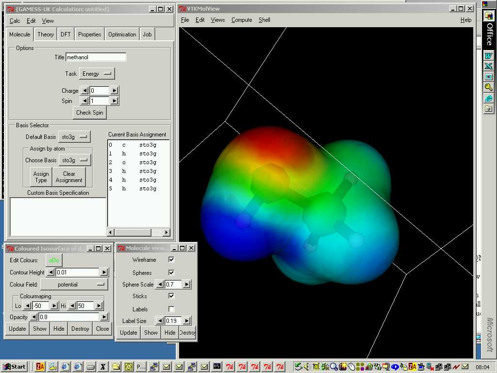

The CCP1GUI project has arisen as a result of demand within the UK academic community (principally through CCP1) for a free, extensible Graphical User Interface (GUI) for community codes, particularly for teaching purposes. There is also a long-standing requirement for a graphical interface for the GAMESS-UK quantum chemistry programme, which we plan to satisfy using the CCP1 developments.
The GUI has been built around the Python open-source programming language and the VTK visualisation toolkit, both of which have been ported to all the major operating system platforms. Distributions of the GUI are available for Windows, Mac OSX, and most of the major Linux distributions, and packages for these distributions are freely available from our ftp site site.
The CCP1GUI has been released under the GNU GPL licence and is freely available to download. Downloads are available from the CCP1GUI pages on sourceforge or from the ftp site of the Computational Chemistry Group at STFC Daresbury Laboratory.
The design of the GUI makes the most of Python's high degree of object-orientation, including advanced features such as multiple inheritance. The strong reliance on object orientation means that it is quick and easy to create interfaces to new computational chemistry codes as the need arises. The GUI already has a highly-featured interface for the GAMESS-UK program, and there are working interfaces for Dalton, Molpro, ChemShell and MOPAC.

A screen shot of the molecular graphics viewer running on Windows, showing the notebook widget used to set the QM code options.
From its inception, the GUI was intended to work with a number of different codes, so a variety of file formats are supported both for reading in molecular structures and outputting data. As well as conventional formats such as Z-matrix and PDB, there are programme-specific formats for CHARMM, ChemShell, XMol and Gaussian, as well as support for XML.
The latest version of the CCP1GUI has an interface to the OpenBabel chemistry toolbox. If OpenBabel (and its Python bindings) are installed on the machine that the CCP1GUI is running on, then the CCP1GUI can read and write the more than 80 file formats supported by OpenBabel.
The GUI has a suite of easy-to-use editing tools that allows complex molecules to be created using simple point-and-click operations. There is also a fully-functional Z-matrix editor that can be used to edit the atomic coordinates of a molecule in internal or Cartesian form. Symbolic variables (and constants) can be defined, and the editor can automatically generate a Z-matrix (including the requisite reordering of the atoms) which can subsequently be customised. Used in conjunction with the graphical tools this creates a powerful and flexible environment for building molecular structures.
The GUI has powerful and highly customisable visualisation capabilities. It can create coloured 3D-surfaces, 2D-slices or grids of points mapped to a desired molecular property, and the colours and opacity are easily adapted to a given schema. Several different vector visualisers are available and were used in a recent study to visualise magntically induced ring currents. Multiple representations of the various molecular properties for the same or different molecules can be created and overlaid to extract the maximum amount of information from the results of a calculation.
The GUI can also be used to view the dynamic properties of a calculation, by animating molecular vibrations or creating a movie from the different steps in a geometry optimisation.
The GAMESS-UK interface for the GUI can be used to drive SCF, DFT or post Hartree-Fock calculations, or to undertake geometry optimisations, including transition state searches. There are options to configure everything from the convergence criteria of SCF calculations and geometry optimisations, to functionals and grid settings for DFT calculations. In addition, the interface includes a tool to configure the basis sets on individual atoms.
The interface also provides access to the various analytical options offered by GAMESS-UK and the results of these calculations are automatically imported into the GUI for display with the visualisation tools.
Work is already underway to enable the GUI to exploit the latest developments in the field of e-Science. The CCP1GUI currently has the ability to submit jobs to resources running Globus or Nordugrid. This allows a user with a Grid Certificate that allows them to run on, for example the UK National Grid Service or the NW-Grid, to create a job on their local machine, have it run in parallel on a large resouce and have the data copied back to their own machine, all from within the CCP1GUI. For more information on this, see the Job Submission documentation.
Further developments with eScience technology will allow the GUI to download molecular structures from databases around the world for viewing, or to serve as the inputs for calculations. As the e-Science Data Model matures however, it will become possible to not only download and view the results of calculations carried out with different codes, but to use the GUI to import the inputs to serve as a basis for new calculations.